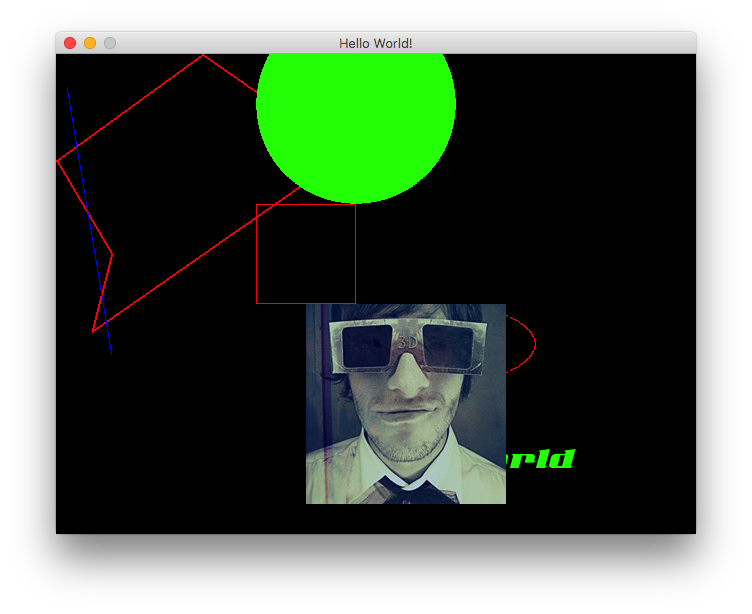

“编学编玩”用Pygame写游戏（3）让角色动起来及碰撞检测
2017-10-20 16:00:52 pygame
上次的代码中，除了绘制基本图形与图片外，中间还插入了一个小小动画，就是头像在不停的移动，这个移动确实简单了些，游戏中的的角色肯定不是简单的移动几像素那么简单了。

屡屡顺序
我觉得刚开始做游戏写代码的时候，总是弄不清游戏的顺序，你可以这样想象一下，比如是拍电影，大家都了解电影是一段一段拍，最后合成在一起然后电影可以播放了。 游戏呢和这个差不多，也是一段一段做，只不过游戏需要一些条件判断，True了，我就播放第三段，这个属性值达到了我就播放第五段，游戏over了，我就播放结尾。 好吧，那么我们规划一下现在这个小游戏（应该算不上是一个游戏）场景及角色。
游戏内容
建一个 640X480的黑色背景的游戏场景，场景中随机生成一些大小一样的小球，他们随机属性值，有一个绿色，有一组红色，如果绿色碰到红色他们就会反转滚动，这些小球如果碰到边界也会反转滚动。 注意：这里碰撞的检测之后的动作，只是简单的，并不是真的物理运动哦，当然如果你很懂物理学，做一组力学物理运动应该也不是很难的。
游戏场景
- 游戏场景的搭建和之前基本上差不多，这里不在介绍了，如果不了解可以翻看之前或是本节的代码参考。
游戏中的角色
之前我们在场景中是直接绘制的图形，这次我们通过面向对象的方式来管理场景中的角色，pygame中提供了一个
Sprite
类，这个类专门为游戏中的角色精灵准备的。
框架中还提供了一个
pygame.sprite.Group()
容器，他可以把sprite加进去，通过group来管理，group这个容器，通过查看源代码，他只能处理图片类型的sprite。
如果创建的Rect对象是不行的，这种加到组里后，通过draw是无法绘制出来的，
group.draw()
这个方法中的画笔使用了
blit()
，而不是
draw()
游戏中的逻辑判断
这个我们直接在游戏中的循环当中直接判断，我是这么把游戏分成各种对象的：
- 游戏场景对象，他只负责绘制场景中的任何角色及精灵
- 游戏逻辑判断对象，他只负责判断游戏场景中的碰撞，时间检测，然后修改他们的属性。
- 精灵group，他们只负责创建，删除。
开始制作
理论课结束，我们来实践一下，
main()
函数中创建一个游戏运行函数
rungame()
，这个函数中运行着当前游戏的所有数据，及各种事件触发的检测。
为什么需要
rungame()
?你可以把他这个函数看成一个电影片段，当前你还可以有
gamestart() gameover()
函数，这样游戏运行到哪个部位时就让哪个函数运行即可。
Sprite 精灵
说说
class MyImgSprite(pygame.sprite.Sprite
，这是当前游戏中的精灵，我们为他创建了几个属性，其中比较重要的有：
self.image = pygame.image.load('./images/a.png') #导入图片
self.rect = self.image.get_rect() #返回一个rect对象
self.rect.topleft = (random.randint(40,590),random.randint(40,430))#设置他的坐标
self.last_update = pygame.time.get_ticks()#获取当前游戏动行的时间，这是一个整数，不明白可以打印看看
#移动速度
self.speed_x = random.randint(1,10)
self.speed_y = random.randint(1,10)
有了速度，我们就可以通过
update()
方法来更新自己的坐标
now = pygame.time.get_ticks()
if now - self.last_update >1:#通过这个时间差来做一些动画
#self.rect.topleft = (random.randint(0,600),random.randint(0,440))#随机变化位置
self.rect.x += self.speed_x
self.rect.y += self.speed_y
self.last_update = now
如果你不在
update()
方法更新任何值，那么 这个精灵就是不会动弹的。
那么问题来了，为什么不直接在游戏循环中更新？
上节的代码中有段小小的移动是在循环中更新的，因为那只有一段动画，如果以后有很多个对象的话，在循环中更新会很麻烦，这里更新更符合面向对象的的编程方式。
绘制及更新
在rungame函数中创建个绿球，一组红球，然后就可以直接在场景里绘制了，绘制方法：
drawbackground()#绘制场景背景颜色
DISPLAYSURF.blit(m.image,m.rect)#绘制绿球
myimgs.draw(DISPLAYSURF)#绘制一组红球
场景中的绘制顺序应该是：
- 绘制精灵
- 逻辑判断
- udpate()更新数据
以此为循环，这样反复循环即可生成画面。
逻辑判断
说到逻辑判断，这次场景中包括的判断有二种：边界碰撞及球体之间的碰撞。
边界碰撞，我自个写了个边界碰撞检测器
BorderCrossing.py
，因为我在pygame中没找到边界碰撞检测的方法，大家在运行代码的时候，记得git clone一下整个项目。
这个边界碰撞检测器，我就不多说了，不然这又一篇博客了，有兴趣可以自己看看源码。
球体之间的碰撞检测直接套用的pygame中的碰撞检测，具体可以参考官方文档
更新游戏数据
在逻辑判断中根据自己的需要进行速度等数据修改，最后记得用方法更新一下精灵们的坐标。 说的不是很好，具体大家跑跑程序，改改数值就明白了，如果有什么不懂的，可以直接留言或是邮件给我。欢迎各位大佬指正！
本文源码下载
请git clone 下所有代码，以免造成游戏跑不起来的情况。
“编学编玩”用Pygame写游戏（2）在场景中绘制图形与动画
2017-10-19 14:03:46 pygame
pygame
的框架使用起来很简单，但这个框架功能也还算可以的，虽然网上对
pygame
评价褒贬不一，但对于其的存在必有其的存在意义，功能上虽然不能说是十分的完美，但对于新手来说，在使用和学习中还是很有价值的。
pygame
图形绘制
rect 绘制矩形 polygon 绘制多边形（三个及三个以上的边） circle 绘制圆 ellipse 绘制椭圆 arc 绘制圆弧 line 绘制线 lines 绘制一系列的线 aaline 绘制一根平滑的线 aalines 绘制一系列平滑的线
上边列举了一些图形绘制的方法，第一结中的代码我们只是给出pygame中最简约的实现代码，我们在上节代码的基础之上继续添加一下，试试画出各种图形。
pygame.draw.polygon(screen, RED, ((146,0),(290,100),(36,277),(55,200),(0,106)),2)
pygame.draw.line(screen, BLUE, (11,33), (55,300), 1)
pygame.draw.circle(screen, GREEN, (300,50), 100, 0)
pygame.draw.ellipse(screen, RED, (300,250,180,80), 1)
pygame.draw.rect(screen, RED, (200,150,100,100), 1)
以上为各种图形绘制的方法演示，关于这些方法的参数，我们可以参考官方的文档，其实都是挺简单的。
在场景中绘制图片
游戏中的角色不可能只是一些简单的图形，大多数时应该都是一张张图片，我们看下图片的绘制方法
bosiImg = pygame.image.load('./images/bosi.png')
screen.blit(bosiImg,(bosix,bosiy))
通过
pygame.image.load()
加载图片后，在场景中使用
screen.blit
绘制，两个参数：图片对象和一个坐标元组。
在场景中写字
pygame中的文字绘制稍稍有一点麻烦，我们看代码：
fobj = pygame.font.Font('./font/3.ttf', 40)
textobj = fobj.render('Hello World', True, GREEN,)
text = textobj.get_rect()
text.center = (400, 400)
screen.blit(textobj, text)#文字显示
看代码行数是五步：
-
通过
pygame.font.Font()加载字体，创建一个font对象，设置文字的大小 -
通过
render('Hello World', True, GREEN,)设置文字的内容，颜色。 -
get_rect()或得一个rect对象，之后就有些象绘制图象了。 - 设置绘制图像的坐标
-
blit()方法绘制文字到场景
让图片动起来
如何在场景中绘制动画？动画其实就是角色坐标值的修改，
bosix = 100
bosiy = 100
在代码中我定义了二个变量，然后我在游戏场景的循环输出中，不断的修改角色的坐标值即可达到需要的动画效果了。

本文源码下载：
“编学编玩”用Pygame写游戏（1）初识pygame
2017-10-19 11:00:31 pygame
啰嗦几句
这阵子一直在看有关
Python
相关的书，
Python
上手确实很简单，但这并不意味着
Python
是一门浅显的编程语言，语法简练确实让我们节省了大量的时间。不过当你深入的学习
Python
的时候，比如：装饰器，推导，多线程及多进程，协程，高阶函数，元编程等等等等很多，你会发现，
Python
的深入学习并不是很简单。会写代
Python
和会优雅的编写
Python
代码是两回事，出来混的，坑迟早还是要挖的，这不前几天协程的深入学习，搞的我很不爽，到现在还是一头雾水。
为了让自己换换心情，前几天想到用
python
写写小游戏玩玩吧，想到自己以前用
java
还编写了一个小小的2D游戏引擎半路就放弃了（java就是不爽），这次来试试用
Python
写些小游戏试试。其实写游戏练习编程确实是一个比较好的方法，几百行的工程量也不算大，游戏设计的逻辑比较紧密，比较适合新手养成编程思维，不过如果是刚刚学习编程，可能还是会觉得游戏中大段的代码，摸不清逻辑，所以通过阅读代码了解游戏的设计意图也算是对编程能力很好的锻炼。
好了，啰嗦了半天，我们开始pygame的学习之旅吧。
pygame 安装
pip3 install pygame
就是这么简单，然后我们可以在python3的终端环境下测试一下
import pygame
如果没有报错，那么恭喜你安装成功了。
pygame的 Hello World
导入pygame模块及常用变量，如果还需要其它模块，可以一并导入，比如sys,os,time random等。
import pygame
from pygame.locals import *
这里是一个游戏初始化的设置，他应该在游戏代码编写的最前边，不要忘记哦。
pygame.init()
SCREEN 定义了一个游戏的屏幕，我觉得管它叫做画布更形象些，因为后续游戏场景中的游戏对象，都要在这个screen上绘制。
SCREEN = pygame.display.set_mode((640, 480))
设置当前游戏窗口的标题
pygame.display.set_caption("Hello World!")
这里有个死循环，这是游戏的主要逻辑处理及场景渲染器，for循环是处理游戏中的事件触发，其中QUIT表示触发了游戏离开件事，然后调用
pygame.quit()
函数。
pygame.display.updae()
这个函数表示更新当前screen的画面。
while True:
for event in pygame.event.get():
if event.type == QUIT:
pygame.quit()
pygame.display.update()
效果如图：
本文源码下载：
浅谈Python中的协程及利用协程代替多线程及多进程并发编程
2017-10-15 15:52:46 Python基础
协程定义说的清楚明了的文章不是很多，手头上有几本Python相关的书籍，其中流畅的Python一书中解释协程的定义是我认为最简单明了的。
生成器如何演变成协程？
乍看生成器和协程长的可真象，因为都用到了yield关键字，那么问题来了，如何区分二者？
def cd(n):
print("Counting down from %s" % n)
while n > 0:
yield n
n -= 1
c = cd(10)
next(c)
for i in c :
print(i,end=' ')
上边是一个典型的生成器函数，我们稍加变化使之成为协程。
def cd1():
n = yield
while n > 0:
print("Counting down from %s" % n)
n -= 1
c1 = cd1()
next(c1)
c1.send(10)
#运行到这里应该抛出一个异常
生成器和协程的不同有没有看出来？很明显的有两处：
- yield的位置
- next()和send()函数的用法
通过运行结果我们可以到最后抛出了一个异常
StopIteration
,结束了这个协程。我们可以考虑一下：用装饰器省略掉next()这步，然后捕获抛出的异常，优雅的关闭掉协程函数。
from functools import wraps
def coroutine(func):
@wraps(func)
def primer(*args, **kwargs):
gen = func(*args,**kwargs)
next(gen)
return gen
return primer
@coroutine
def cd2():
n = yield
while n > 0:
print("Counting down from %s" % n)
n -= 1
try:
cd2().send(10)
except Exception as e:
print('协程任务终止')
带上了装饰器，就更简便一些了，最后捕获异常，就可以优雅的结束这个协程了。
利用协程代替线程或进程进行并发编程
我们想用生成器（协程）作为系统线程的替代方案来实现并发。协程有时也称为用户级线程或绿色线程。————引自《Python Cookbook》 这里的协程用到了asyncio模块，利用asyncio模块实现了一个协程的并发。关于asyncio的实现原理，稍后再研究一下。
import asyncio
import time
import threading
def tn(func):
'''定义一个程序运行时间计算函数'''
def wrapper(*args, **kwargs):
start = time.time() # 起始时间
func(*args, **kwargs) # 要执行的函数
end = time.time() # 结束时间
print('程序运行时间:{:.2f}ms'.format((end-start)))
return wrapper
def loop1(tname):
print(tname+"循环loop1打印时间======" + time.ctime())
time.sleep(1)
# @asyncio.coroutine
async def loop2(tname):# async等同于@asyncio.coroutine
print(tname+"循环loop1打印时间======" + time.ctime())
# yield from asyncio.sleep(1)
await asyncio.sleep(1) # 等同于yield from
@asyncio.coroutine
def loop3(tname):# async等同于@asyncio.coroutine
print(tname+"循环loop1打印时间======" + time.ctime())
yield from asyncio.sleep(1)
# await asyncio.sleep(1) # 等同于yield from
@tn
def main():
print('多线程任务开始执行=====')
threads = []#定义一个线程队列
for i in range(5):
t = threading.Thread(target=loop1, args=("thread"+str(i),))
threads.append(t)
for i in range(5):
threads[i].start()
for i in range(5):
threads[i].join()
#协程并发测试
print('协程并发测试开始======')
loop = asyncio.get_event_loop()# 获取一个event_loop
#任务列表
tasks = [
asyncio.ensure_future(loop2('11111')),
asyncio.ensure_future(loop2('22222')),
asyncio.ensure_future(loop2('33333')),
asyncio.ensure_future(loop3('44444')),#loop3
asyncio.ensure_future(loop3('55555'))]#loop3
loop.run_until_complete(asyncio.wait(tasks))
loop.close()
if __name__ == '__main__':
main()
上边这组代码稍稍有点乱，可能你需要认真的理下思绪，对比一下结果，你会发现虽然后边执行的代码没有利用多线程，但打印结果上的时间和多线程的执行结果是一样的。 这就是协程的魅力所在，一条线程搞定多线程任务。
聊聊Python中晦涩的生成器（yield）与生成器表达式
2017-10-14 08:21:49 Python基础

晦涩的生成器yield
刚开始接触Python的时候感觉很清爽，入门很简单，但后边学到生成器和协程的时候就感觉有些吃力了，是时候深入的学习一下了。
什么是生成器？
书上说：函数使用yield可以定义生成器对象，那么包含yield的函数主是一个生成器函数，它可以生成一个序列，方便迭代中使用，
__next__()
#python3中的特殊方法，应该避免使用特殊方法，
next(c)
使用内置函数next()即可。
def countdown(n):
print("Counting down from %s" % n)
while n > 0:
yield n
n -= 1
return
c = countdown(10)
print(c.__next__())#python3中的特殊方法，应该避免使用特殊方法
print(next(c))#使用内置函数next()
for i in c :
print(i,end=' ')
函数对象调用
.__next__()
函数时开始执行语句，遇到yield语句时停止。可以使用循环来操作生成器。
调用
close()
方法关闭未使用完的生成器。
那么问题来了，yield到底是什么？
我们把上边的代码稍加变化:
def countdown1(n):
print("Counting down from %s" % n)
while n > 0:
yield n*n
n -= 1
return
c = countdown1(10)
print(next(c))
print(next(c))
print(next(c))
for i in c :
print(i,end=' ')
运行之后我们可以发现程序运行到yield的时候返回了一个值，那么yield和return在功能上有些相似。
生成器表达式
如果你对列表推导有些了解，你会发现，生成器表达式只不过是把列表的[]换成了元组的()，但列表推导返回的是一个结果集，而生成器表达式返回的是一个生成器。 因为这个特点，我们可以通过流方式访问一个巨大的文件而不必把它直接加载到内存，这样很大的提高了程序的性能。
代码如下：
print('')
print("生成器表达式:")
b = (x*x for x in range(10) if (x % 2 ==0))
print(next(b))
print(next(b))
for i in b :
print(i, end=' ')
本文源码下载：
Python中创建TCP服务器与客户端进行通信(下)Tk、thread与socket组合。
2017-10-13 10:57:48 Python基础
先这样吧，为了不耽误稍后的学习进程，这个聊天室先码到这里，不想继续填坑了。服务器端用TK实现了图形展示，客户端依然终端。具体如下图：


Tk多线程中的坑
- 在图形化后，主线程中开出一条线程，不要直接在主线程中进行通信，不然循环会卡死，专门处理创建socket线程的工作线程，记得self.t.setDaemon(True)#这里很重要，不加程序界面会卡死！
- 客户端没有实现图形化，完全不知道怎么弄，只要一启动，窗口就会被线程卡死，暂时先终端吧。
多用户服务器端
每条连接都创建一个socket，这样每个线程处理自己的收发消息，但是这种架构如果在大量连接下会占用很多的系统资源，如果把socket放到一个容器里，然后使用生成器协程来轮循收发消息， 这样的话只需要一个线程即可，性能必会提高不少，这正是稍后要学习的任务，也是python中的难点。
关于服务器的命令及私聊功能，这些应该都是通过消息来判断，所以后续一定会把消息进行封装发送，一条消息中应该包括命令及消息正文，这样就可以通过命令来判断用户的需求了。
客户端
客户端目前就是没有实现图形化，哪位大侠如果实现了，记得通知我，万分感谢，这个坑先放这里不踩了。
具体代码就不贴了，到git下载吧。
代码运行，请在终端中，不要在IDE中启动。代码运行，请在终端中，不要在IDE中启动。代码运行，请在终端中，不要在IDE中启动。
本文源码下载：
Python中创建TCP服务器与客户端进行通信（上）
2017-10-12 10:14:40 Python基础

前言
学习套接字编程最好的方法就是从实际应用的开发中边学边用，这样对TCP服务器及客户端通信中遇到的知识点才会更加了解。 开发一个拥有服务器并且可以处理多客户端的聊天室应用程序，服务器有一定的管理权限，比如：群发消息，管理客户端可以限制连接及断开客户端连接等。 客户端可以在聊天室里群聊，私聊。
好吧，为了保证这个小小的应用开发跨度不会太大，我们采用循序渐进的方式，从基础代码上迭代开发，这里会用到的知识点有：
-
Python的socket套接字模块 -
Python的多线程模块 -
Python Tk GUI模块，后边有可能考虑做成可视化的聊天室。
socket模块
关于套接字网络编程的理论知识，这里就不在重复了，网上有很多，大家自己搜索一下好了。
要创建套接字，使用
Python socket.socket()
函数即可，他有一些固定的方式：
s = socket(AF_INET, SOCK_STREAM)# 创建TCP/IP套接字对象
获得了套接字对象后，就可以使用套接字对象的方法进行交互了。
socket
中一些常用方法
服务器套接字方法：
-
s.bind()这个方法，绑定服务器的IP及端口 -
s.listen(int)监听，可以设置一个整数限制客户端的连接。 -
s.accpt()被动接受TCP客户端的连接（阻塞）
客户端套接字方法：
-
s.connect()连接服务器
其它方法：
-
s.recv()接收TCP消息 -
s.send()发送TCP消息 -
s.close()关闭套接字。
关于消息
发送和接收消息时需要进行编码和解码，这里使用
data.encode('utf-8')
和
data.decode()
保证通信消息的正常发送，如果不使用会报错。
好了，先来个简单的例子，下边是代码，建议代码运行的时候不要在IDE里运行，请在终端中运行。
服务器端
from socket import *
from time import ctime
HOST = '127.0.0.1'
PORT = 6666
BUFSIZ = 1024
ADDR = (HOST, PORT)# IP 端口
tcpSerSock = socket(AF_INET, SOCK_STREAM)# 创建TCP/IP套接字服务器
tcpSerSock.bind(ADDR)#绑定IP及端口
tcpSerSock.listen(5)
while True:
print("等待客户端连接=======")
tcpCliSock, addr = tcpSerSock.accept()#被动接受客户端连接
print("客户端已连接=====")
while True:
data = tcpCliSock.recv(BUFSIZ)#接收客户端发来的数据
print(data.decode())
if 'exit' == data.decode():break
data = "{0}".format(ctime())+" "+data.decode()
tcpCliSock.send(data.encode('utf-8'))
tcpCliSock.close()
tcpSerSock.close()客户端
from socket import *
HOST = '127.0.0.1'
PORT = 6666
BUFSIZ = 1024
ADDR = (HOST,PORT)
# 创建客户端，并连接服务器
tcpCliSock = socket(AF_INET, SOCK_STREAM)
tcpCliSock.connect(ADDR)
while True:
data = input("> ")
tcpCliSock.send(data.encode('utf-8'))
if 'exit' == data :break
data = tcpCliSock.recv(BUFSIZ)
print(data.decode())
tcpCliSock.close()就目前这个聊天室只是完成了通信的最基本功能，只能由客户端发送一条消息，服务器端自动回应消息。之后的继续都是建立在这个基础模型之上了。
半双工的聊天室
如果稍加修改，我们就可以使这个服务器和客户端进行一对一的聊天了。
- 服务器端添加判断，如果客户端发来的数据有内容，就进行输入，然后把数据发送给客户端。
- 客户端连接后，先进行消息的发送，然后就一直等待服务器的消息回送，然后循环。
现在的这个聊天系统缺点就是，必须等待另一方发来消息，才能回复消息，稍后我们继续改进。
相关代码如下：
半双工服务器
from socket import *
from time import ctime
HOST = '127.0.0.1'
PORT = 6666
BUFSIZ = 1024
ADDR = (HOST, PORT)# IP 端口
tcpSerSock = socket(AF_INET, SOCK_STREAM)# 创建TCP/IP套接字
tcpSerSock.bind(ADDR)#绑定IP及端口
tcpSerSock.listen(5)
while True:
print("等待客户端连接=======")
tcpCliSock, addr = tcpSerSock.accept()#被动接受客户端连接
print("客户端已连接=====")
while True:
data = tcpCliSock.recv(BUFSIZ)#接收客户端发来的数据
print(data.decode())
if 'exit' == data.decode():break
if data:
data = input("> ")
data = "{0}".format(ctime())+" "+data
tcpCliSock.send(data.encode('utf-8'))
tcpCliSock.close()
tcpSerSock.close()半双式的客户端
from socket import *
HOST = '127.0.0.1'
PORT = 6666
BUFSIZ = 1024
ADDR = (HOST,PORT)
# 创建客户端，并连接服务器
tcpCliSock = socket(AF_INET, SOCK_STREAM)
tcpCliSock.connect(ADDR)
while True:
data = input("> ")
tcpCliSock.send(data.encode('utf-8'))
if 'exit' == data :break
while True:
data = tcpCliSock.recv(BUFSIZ)
if data:
print(data.decode())
break
tcpCliSock.close()本文源码下载：
Python程序在Windows10终端运行中文乱码解决方法
2017-10-10 21:03:34 Python基础
今天发布了一段代码，微博上有朋友在win10下边测试报错，看错误应该是中文编码问题，然后自己试了下，总结了一下原因：
测试中文打印print()
在win10中新建记事本文档， 敲入代码：
print("我来试试哈")
保存test.py，运行，果然报错，如下图：
SyntaxError: Non-UTF-8 code starting with '\xce' in file i:/python3/te
st.py on line 1, but no encoding declared; see http://python.org/dev/p
eps/pep-0263/ for details

为什么呢？
因为win10下边新建记事本文件是ANSIX编码的

解决方法
把文件另存，在编码中选择utf8。

然后运行，完美解决！